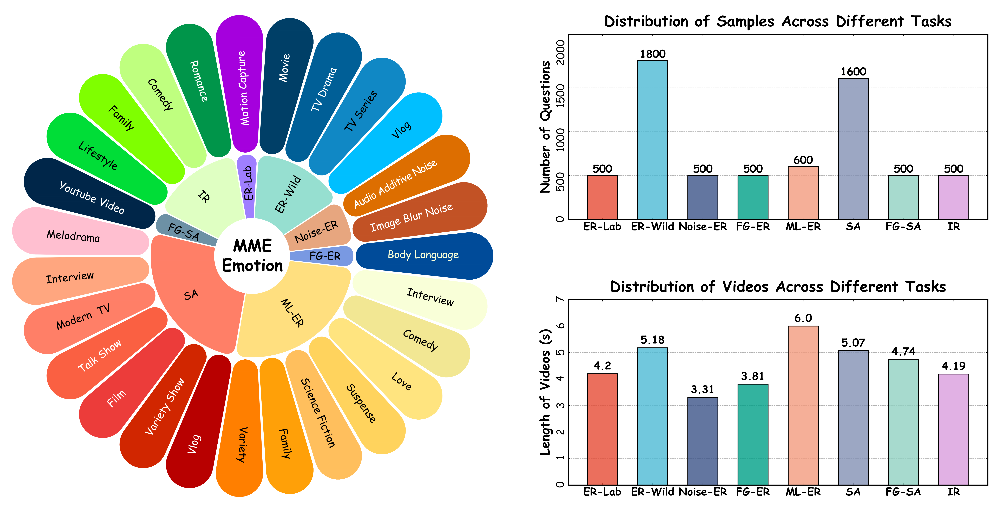
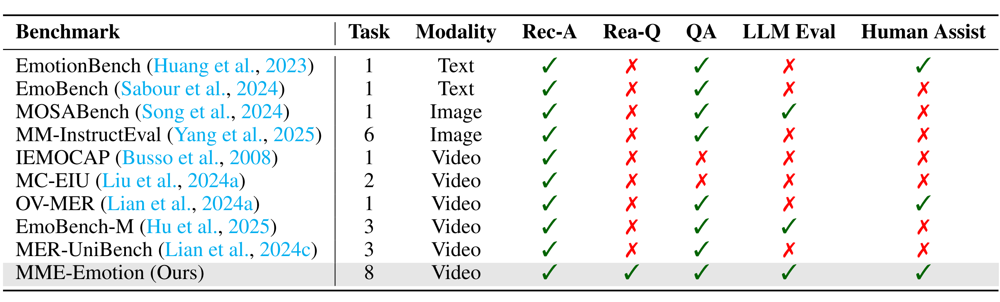
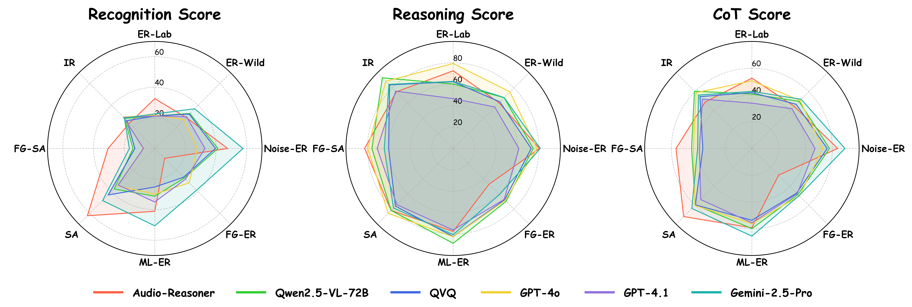

| # | Model | ER-Lab | ER-Wild | Noise-ER | FG-ER | ML-ER | SA | FG-SA | IR | ||||||||||||||||
|---|---|---|---|---|---|---|---|---|---|---|---|---|---|---|---|---|---|---|---|---|---|---|---|---|---|
| Rec-S | Rea-S | CoT-S | Rec-S | Rea-S | CoT-S | Rec-S | Rea-S | CoT-S | Rec-S | Rea-S | CoT-S | Rec-S | Rea-S | CoT-S | Rec-S | Rea-S | CoT-S | Rec-S | Rea-S | CoT-S | Rec-S | Rea-S | CoT-S | ||
| 1 | Gemini-2.5-Pro 🥇 | 22.6 | 62.7 | 42.7 | 36.7 | 67.3 | 52.0 | 57.6 | 81.2 | 69.4 | 38.6 | 61.0 | 49.8 | 50.6 | 80.5 | 65.5 | 48.2 | 78.7 | 63.4 | 16.6 | 64.3 | 40.5 | 28.1 | 84.7 | 56.4 |
| 2 | Audio-Reasoner 🥈 | 32.6 | 72.6 | 52.6 | 28.8 | 60.4 | 44.6 | 47.6 | 80.4 | 64.0 | 9.1 | 47.3 | 28.2 | 41.1 | 77.5 | 59.3 | 62.2 | 81.9 | 72.0 | 30.5 | 82.6 | 56.6 | 23.4 | 74.9 | 49.2 |
| 3 | GPT-4o 🥉 | 21.8 | 79.4 | 50.6 | 26.8 | 74.8 | 50.8 | 27.8 | 78.2 | 53.0 | 31.8 | 68.6 | 50.2 | 29.9 | 82.5 | 56.2 | 34.6 | 85.7 | 60.2 | 7.6 | 79.7 | 43.6 | 29.1 | 88.9 | 59.0 |
| 4 | Qwen2.5-VL-72B | 21.2 | 60.2 | 40.7 | 32.4 | 67.2 | 49.8 | 41.2 | 74.6 | 57.9 | 27.3 | 69.8 | 48.6 | 31.2 | 88.6 | 59.9 | 37.5 | 81.9 | 59.7 | 14.2 | 75.8 | 45.0 | 27.9 | 93.4 | 60.6 |
| 5 | QVQ | 21.2 | 62.4 | 41.8 | 31.8 | 61.6 | 46.7 | 39.6 | 72.7 | 56.2 | 26.6 | 67.8 | 47.2 | 25.2 | 82.3 | 53.7 | 43.0 | 76.2 | 59.6 | 13.0 | 60.2 | 36.6 | 25.7 | 84.0 | 54.8 |
| 6 | Gemini-2.0-Flash | 24.0 | 55.6 | 39.8 | 41.1 | 56.9 | 49.0 | 52.4 | 67.5 | 60.0 | 30.9 | 58.6 | 44.7 | 38.3 | 71.7 | 55.0 | 42.1 | 61.1 | 51.6 | 11.0 | 44.0 | 27.5 | 24.7 | 67.9 | 46.3 |
| 7 | GPT-4.1 | 21.2 | 46.6 | 33.9 | 29.3 | 54.8 | 42.1 | 32.8 | 61.3 | 47.0 | 28.4 | 67.3 | 47.8 | 35.0 | 76.2 | 55.6 | 33.8 | 74.3 | 54.0 | 7.4 | 70.9 | 39.1 | 28.7 | 75.8 | 52.2 |
| 8 | Qwen2.5-VL-7B | 22.0 | 62.0 | 42.0 | 28.9 | 55.3 | 42.1 | 37.8 | 62.9 | 50.3 | 19.5 | 62.2 | 40.9 | 23.6 | 75.2 | 49.4 | 36.5 | 70.7 | 53.6 | 12.2 | 56.6 | 34.4 | 28.1 | 82.5 | 55.3 |
| 9 | Gemini-2.5-Flash | 19.6 | 48.3 | 33.9 | 35.8 | 54.9 | 45.3 | 54.4 | 73.2 | 63.8 | 20.5 | 37.8 | 29.2 | 38.7 | 30.1 | 34.4 | 44.2 | 55.9 | 50.1 | 15.2 | 47.4 | 31.3 | 24.6 | 65.5 | 45.1 |
| 10 | R1-Omni | 20.6 | 58.0 | 39.3 | 34.3 | 52.8 | 43.6 | 52.0 | 67.4 | 59.7 | 5.1 | 49.5 | 27.3 | 23.1 | 76.2 | 49.6 | 27.8 | 60.6 | 44.2 | 7.6 | 51.9 | 29.8 | 16.6 | 58.7 | 37.7 |
| 11 | Qwen2-Audio | 20.4 | 32.3 | 26.3 | 22.3 | 38.4 | 30.3 | 38.8 | 57.6 | 48.2 | 21.7 | 22.0 | 21.8 | 53.5 | 72.8 | 63.2 | 53.6 | 65.4 | 59.5 | 19.6 | 62.5 | 41.1 | 27.3 | 45.9 | 36.6 |
| 12 | Qwen2.5-Omni | 19.8 | 50.7 | 35.2 | 19.0 | 54.3 | 36.7 | 24.2 | 60.1 | 42.1 | 10.4 | 42.3 | 26.3 | 11.0 | 64.9 | 38.0 | 24.6 | 68.1 | 46.3 | 6.2 | 45.2 | 25.7 | 5.4 | 81.8 | 43.6 |
| 13 | Video-LLaMA | 15.0 | 34.7 | 24.8 | 25.5 | 44.7 | 35.1 | 28.0 | 38.1 | 33.0 | 33.7 | 34.6 | 34.1 | 29.6 | 68.7 | 49.2 | 31.3 | 50.7 | 41.0 | 14.6 | 54.6 | 34.6 | 20.2 | 62.5 | 41.4 |
| 14 | Qwen2-VL-7B | 15.2 | 3.0 | 9.1 | 31.5 | 32.3 | 31.9 | 45.4 | 50.2 | 47.8 | 26.4 | 4.5 | 15.4 | 30.3 | 24.3 | 27.3 | 34.1 | 60.6 | 47.3 | 7.6 | 37.6 | 22.6 | 26.3 | 61.0 | 43.6 |
| 15 | AffectGPT | 18.0 | 64.4 | 41.2 | 8.3 | 41.9 | 25.1 | 16.8 | 59.5 | 38.1 | 5.2 | 40.6 | 22.9 | 10.8 | 65.9 | 38.3 | 17.6 | 52.3 | 35.0 | 12.8 | 51.3 | 32.1 | 1.8 | 44.0 | 22.9 |
| 16 | Video-LLaVA | 11.2 | 8.7 | 9.9 | 21.2 | 2.2 | 11.7 | 37.6 | 22.3 | 29.9 | 10.9 | 26.6 | 18.7 | 52.7 | 57.1 | 54.9 | 35.8 | 55.8 | 45.8 | 5.8 | 73.6 | 39.7 | 15.4 | 39.8 | 27.6 |
| 17 | Video-LLaMA2 | 23.4 | 0.3 | 11.9 | 25.4 | 44.7 | 35.0 | 45.0 | 13.0 | 29.0 | 21.3 | 5.3 | 13.3 | 40.1 | 31.0 | 35.5 | 37.6 | 27.3 | 32.5 | 13.0 | 41.3 | 27.2 | 16.8 | 14.2 | 15.5 |
| 18 | Qwen2-VL-72B | 20.6 | 21.7 | 21.2 | 33.3 | 15.4 | 24.3 | 47.4 | 21.6 | 34.5 | 23.9 | 2.9 | 13.4 | 33.5 | 0.8 | 17.1 | 34.8 | 9.3 | 22.1 | 10.0 | 3.9 | 7.0 | 30.7 | 0.0 | 15.3 |
| 19 | HumanOmni | 24.8 | 0.0 | 12.4 | 52.8 | 0.0 | 26.4 | 68.4 | 0.0 | 34.2 | 16.5 | 0.8 | 8.6 | 34.3 | 2.7 | 18.5 | 32.1 | 0.0 | 16.0 | 7.8 | 0.0 | 3.9 | 15.8 | 0.2 | 8.0 |
| 20 | Emotion-LLaMA | 21.0 | 0.0 | 10.5 | 32.3 | 0.0 | 16.1 | 58.4 | 0.0 | 29.2 | 10.7 | 4.3 | 7.5 | 5.7 | 0.5 | 3.1 | 26.1 | 0.1 | 13.1 | 5.8 | 0.0 | 2.9 | 23.8 | 0.3 | 12.0 |
Introduction
Recent advances in multimodal large language models (MLLMs) have catalyzed transformative progress in affective computing, enabling models to exhibit emergent emotional intelligence. Despite substantial methodological progress, current emotional benchmarks remain limited, as it is still unknown: (a) the generalization abilities of MLLMs across distinct scenarios, and (b) their reasoning capabilities to identify the triggering factors behind emotional states.

Overview of MME-Emotion Statistics.

Comparison of MME-Emotion with other Benchmarks related to Emotional Intelligence.
Towards this end, we present MME-Emotion, the first-ever comprehensive emotional intelligence benchmark for MLLMs, featuring scalable capacity, diverse settings, and unified protocols. As shown in the figure above, MME-Emotion consists of 6,500 video clips associated with task-specific question-answering (QA) pairs across 27 distinct scenario types to formulate eight emotional tasks, including emotion recognition in the lab (ER-Lab), emotion recognition in the wild (ER-Wild), emotion recognition under noise (Noise-ER), fine-grained emotion recognition (FG-ER), multi-label emotion recognition (ML-ER), sentiment analysis (SA), fine-grained sentiment analysis (FG-SA), and intent recognition (IR). The distributions of question volume and video duration are balanced across all tasks, with each task containing a minimum of 500 QA pairs and video clips averaging >3.3 seconds.

Illustration of Our Evaluation Strategy.
Going beyond this, we provide a holistic evaluation suite for assessing the capabilities of MLLMs in emotion recognition and reasoning using unified protocols across all sub-tasks within MME-Emotion. For each question, we employ a multi-agent system framework to enable automated evaluation of MLLMs' responses with an MLLM-as-judge strategy. The visual clues, extracted audio clues, ground-truth emotion labels, and partitioned answer steps of a specific MLLM are fed into a GPT-based judge agent to evaluate the performance using three metrics: recognition score, reasoning score, and Chain-of-Thought (CoT) score. To further validate our evaluation approach, we also ask five human experts to cross-evaluate the performance of MLLMs on sampled data and manually annotated scores at each answer step. The comparison between GPT and expert scores demonstrates high consistency across multiple statistical metrics, confirming the effectiveness of our automated evaluation strategy.

Performance Comparison of Leading MLLMs on MME-Emotion.
Applying our evaluation suite to 20 state-of-the-art MLLMs, we uncover both their strengths and limitations, yielding the following key insights:
(1) The overall emotional intelligence of current MLLMs remains far from satisfactory. Even the top-performing model (Gemini-2.5-Pro) achieves merely 39.3% recognition score and 56.0% CoT score on our benchmark, respectively. The average performance across all evaluated MLLMs (29.4% recognition score, 49.5% reasoning score, and 39.5% CoT score) indicates there is still substantial room for improvement.
(2) While generalist models (e.g., Gemini-2.5-Pro and GPT-4o) derive emotional intelligence from generalized multimodal understanding capabilities, specialist models (e.g., R1-Omni and Audio-Reasoner) can achieve comparable performance through emotion-specific post-training adaptation techniques, such as supervised fine-tuning (SFT) and human preference alignment.
(3) Generally, response step count positively correlates with model performance, underscoring the necessity for equipping MLLMs with emotion reasoning capabilities in future development.